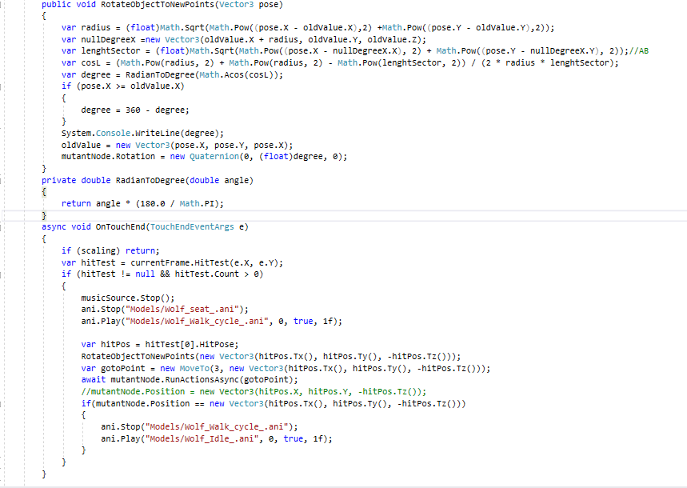

Helo, I am start learning ARCore with UrhoSharp.
Now i try rotate model by users click on display.

It is my method`s when i try rotate models. But it work not correctly. Can you help me?
Leith
Sorry, I know I could help you, but apparently, it’s bad form to help people here, if they are using the urho sharp fork. Maybe I can answer your question on their forum.
This forum is devoted to Urho3D public and master forks. Nothing else.
I’m just trying to keep things (relatively) on-topic and prevent this community from being suffocated through support of a dead fork. Sure, it’s important to be nice, but a line must be drawn somewhere. If UrhoSharp users get better help here - and it’s hard not to - I do believe these forums may be overrun. To me it seems wiser, for everyone, if UrhoSharp users were to switch to either Urho3D or
rbfx
instead. Support for rbfx - likewise - should not be expected
here
.